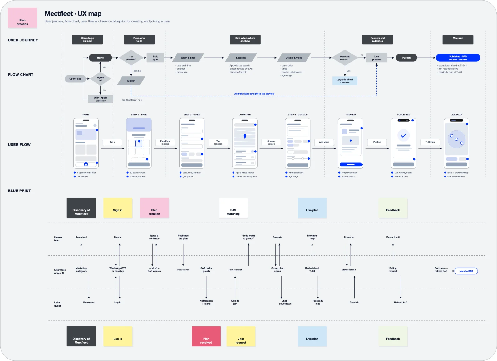
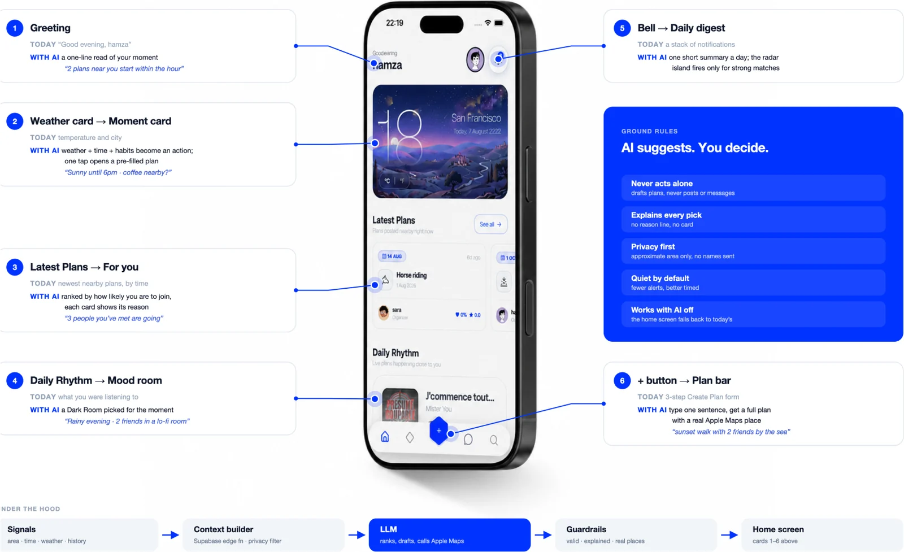
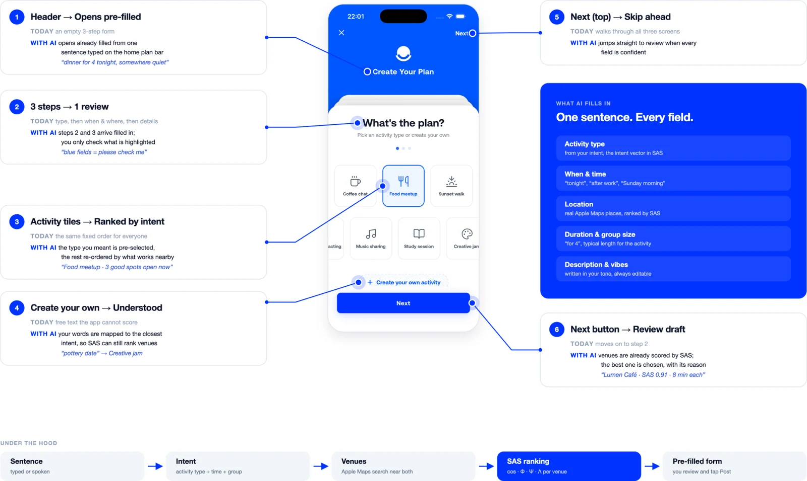
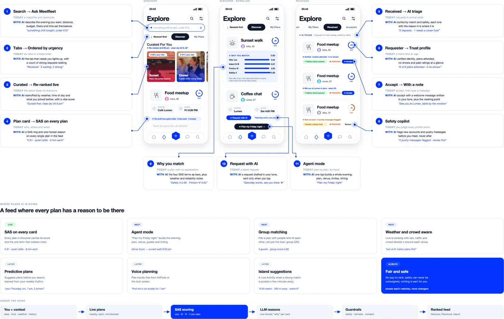
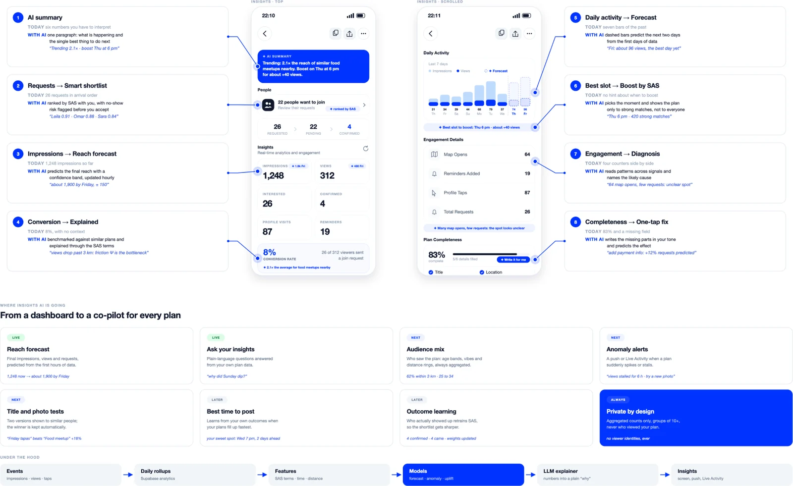
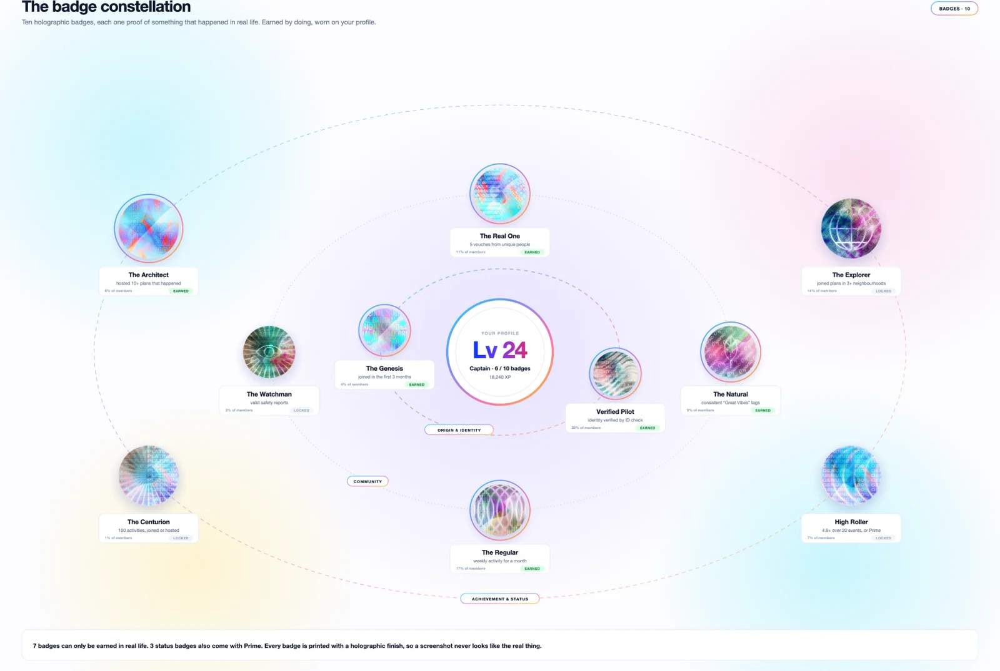
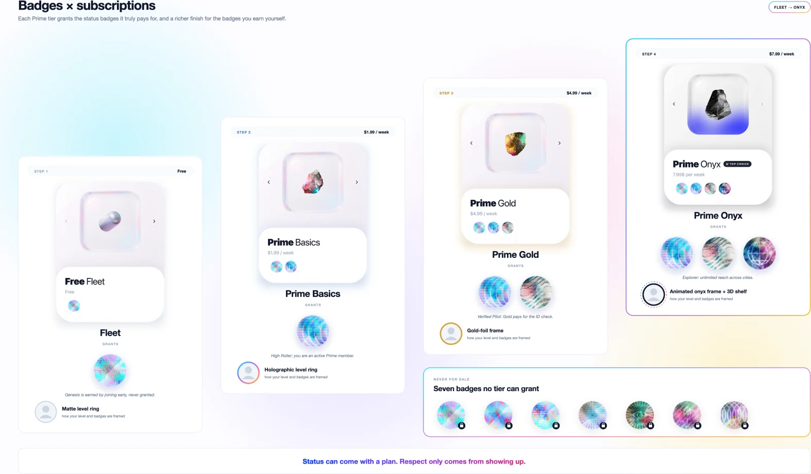
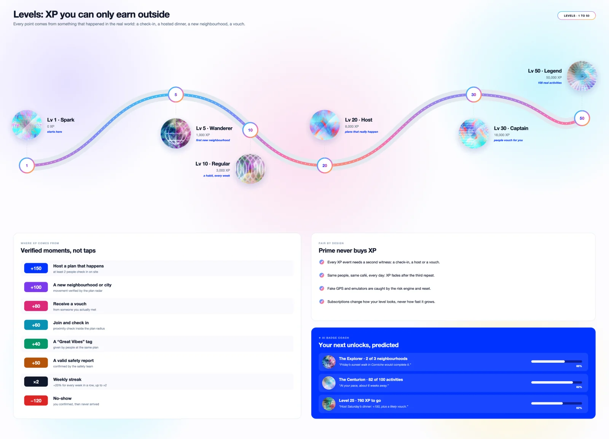

Designing the journey: from “I’m bored” to “see you there”
Most social apps map a journey that ends on a screen. Ours ends in the real world.
We traced every step from the moment someone wants to go out to the moment two people actually meet, then rebuilt each one to remove friction: one sentence instead of ten fields, a preview instead of a form, a Dynamic Island countdown instead of a reminder you forget. The blueprint follows the host, the guest and Meetfleet side by side, so every tap on one phone becomes a signal on the other: a join request, a radar ping, a check-in. It also loops back on itself, because every meetup that happens, or doesn’t, retrains the Social Activation Score. The journey doesn’t stop at the meetup. Each one makes the next plan a little better.

Part 1 · The product
Home Screen: an informative centerpiece
The Meetfleet home screen is planned to shift from showing what’s happening to suggesting what you should do now. An LLM, called through an edge function, would combine a few signals: your approximate location, the time and weather, your past plans, and people you’ve met. From those it ranks nearby plans into a personal “For you” feed and turns the weather card into a “moment” card, such as “Sunny until 6pm, coffee nearby?”.

Its centrepiece is a plan bar: type “sunset walk with 2 friends tomorrow by the sea” and the AI fills in the full Create Plan form, with a real place from Apple Maps, the right time and the group size. The user only reviews and taps Post. Every suggestion comes with a short reason, alerts stay rare, only approximate location ever leaves the phone, and the AI never posts on its own. If the AI is off, the home screen works exactly as before.
Plans creation craft
Easiest click, is what you want, a dinner? Okay, after choosing the activity, the host answers two quick screens. “Where and When” covers the date, time, a real place from Apple Maps, the duration and the group size. “Who and How” covers a short description, the vibes, who the plan is open to, interests, how payment works and the age range. Every field exists for a reason, because each one feeds the Social Activation Score: the place and time become friction, the vibes become the vibe signature, and the payment choice decides whether anyone pays more than their share.

With the AI layer, most of this arrives already filled in. The best times come from when your plans usually fill up, places come ranked by SAS, the description is written in your tone, and the vibes are picked from what you typed. The host just reviews the highlighted fields and taps Create Plan.
Plans: a feed that explains itself
The Plans tab is where people find something to do, so it’s where the Social Activation Score matters most. Every plan in Discover carries its score and the single reason behind it, curated ideas re-rank with the weather, and a “Why you match” panel opens the four SAS terms for anyone who’s curious. Hosts get requests sorted by match and safety, with a trust profile for each person and a copilot that flags anything that looks wrong. For the ambitious evenings, agent mode plans the whole night in one tap. The AI ranks, explains and drafts, and the person always makes the final tap.

Plan Insights: an analyst, a strategist and a copilot in one screen
Every plan has its own analytics, and Meetfleet’s AI reads them in real time so the host doesn’t have to. Take a Friday food meetup two days before it starts: 1,248 impressions, 312 views, 26 requests and an 8% conversion rate. A plain dashboard stops at those numbers. Meetfleet’s AI starts there. It sums up the situation in one line (“Trending 2.1× · boost Thursday at 6 pm”), forecasts the final reach from the first hours of data, and draws the next two days as dashed bars before they happen.

It also explains weak spots through the Social Activation Score. When distant viewers never request, it names friction as the bottleneck: “views drop past 3 km.” When 64 people open the map but few ask to join, it suggests a clearer meeting point. With the host’s approval, it writes missing details in their tone, times boosts so they reach only strong matches, ranks requests by match and flags no-show risks. Hosts can ask questions in plain words, like “why did Sunday dip?” Every outcome retrains the score, and hosts only ever see aggregated numbers, never who viewed their plan.
Part 2 · Business
Subscriptions: How AI shapes each tier
In Meetfleet’s future, every tier is built around how much AI it uses and what that AI costs to run. Simple tasks run on the phone for free. Heavier reasoning runs in the cloud, where every request has a price. The tiers follow that cost curve, so each price covers the AI behind it.
-
FleetFree · on-device AI
-
Prime Basics$1.99 / week · light cloud AI
-
Prime Gold$4.99 / week · predictive AI
-
Prime Onyx$7.99 / week · agent AI
Fleet (free): on-device AI. Small models run directly on the iPhone: the SAS ring on every plan, smart location matching, basic safety screening and catch-up lines for chats. Nothing leaves the phone, so the cost to Meetfleet is almost zero, and that’s what keeps the free tier truly free.
Prime Basics ($1.99 / week): light cloud AI. A small, fast cloud model handles the plan bar (“dinner for 4 tonight”), smart replies in chat and wider-radius ranking. Answers are cached and shared between similar requests, so each user costs a few cents a week.
Prime Gold ($4.99 / week): predictive AI. Gold adds the analytics brain: reach forecasts, conversion explained through SAS, best-time-to-boost suggestions and AI-ranked request shortlists. These models run on a schedule (hourly per live plan) rather than on every tap, which keeps the cost predictable as hosts scale up to 50 plans.
Prime Onyx ($7.99 / week): agent AI. Onyx unlocks the largest models and the most expensive feature, agent mode: “Plan my Friday night” builds a whole evening, coordinates a group, checks weather and venues, and drafts every invite. It also adds live translation, voice-note transcription and an AI concierge in priority support. Agent runs are capped per week to keep costs fair, with the cap set well above what most people ever use.
AI cost buys convenience, never ranking. The Social Activation Score and every safety check run the same way for a free user as for Onyx.
The Level Regime
On Meetfleet, status isn’t a follower count. It’s proof of things that actually happened. Ten holographic badges mark real moments: The Architect for hosting 10 plans that really took place, The Real One for five vouches from people you’ve met, The Explorer for plans in three neighbourhoods, and The Watchman for keeping the community safe. Each one has a holographic finish, so a screenshot never looks like the real thing.

Levels work the same way. XP only comes from verified moments: a check-in inside the plan radius, a dinner where guests actually arrived, a new part of the city, a “Great Vibes” tag. A weekly streak can double it, and a no-show takes it away.

Subscriptions add status badges that a tier genuinely covers: High Roller for being a Prime member, Verified Pilot because Gold pays for the ID check, and Explorer for Onyx’s reach across cities. They also add richer frames, from holographic to animated onyx. Prime never buys XP, and seven of the ten badges can only be earned. An AI badge coach shows what’s next (“one sunset walk in Corniche completes The Explorer”), so the only way to level up is to go out.

Some of this is imagined: the levels, the XP values, the rarity percentages, the frames and the AI coach. The badges, their earning rules and the tier grants are real and in the code.
Conclusion: technology that brings people together
Meetfleet’s direction is simple: make it easier to move from wanting to go out to actually meeting. The Social Activation Score gives recommendations a clear basis, while AI helps people discover, plan and understand their options without taking away the final decision. Across subscriptions and rewards, the principle stays the same: convenience can be paid for, but trust and participation must be earned. The proposed features build toward a product where technology supports real-world connection—not more time on a screen.